CAR
实验
类别号: 151
原始图像
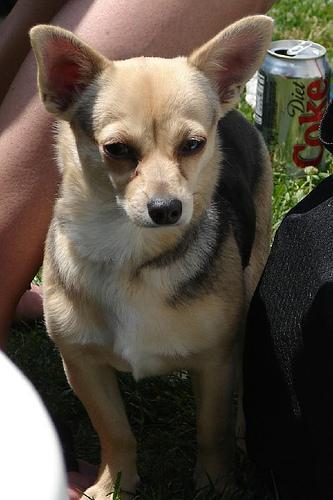
深度图
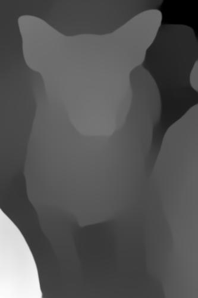
深度图生成效果
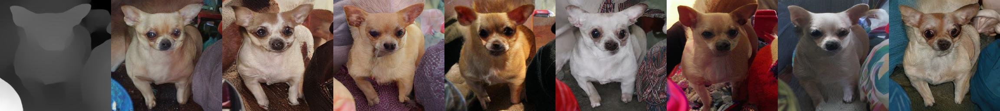
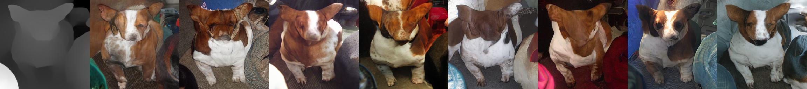
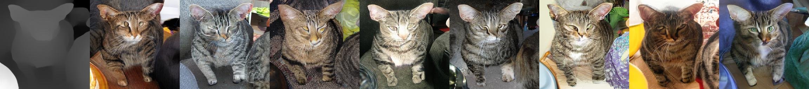
使用 box 深度图生成效果
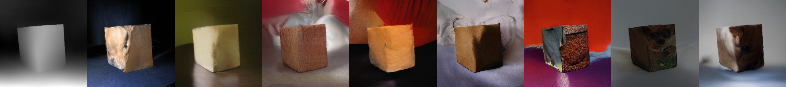
不同控制下的生成效果
canny
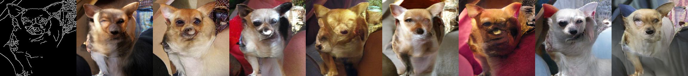
hed
normal
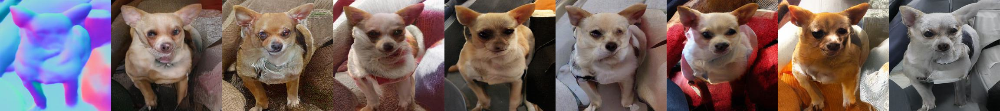
sketch
CAR 论文阅读
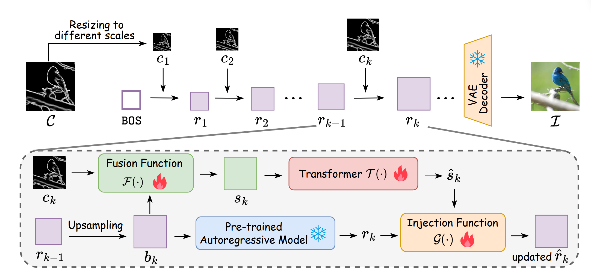
推导
按照贝叶斯规则(或联合分布的因式分解规则)可以写成：
其中 “历史数据” 表示
由贝叶斯公式可以得到
运用链式法则，可以得到
于是我们再把第 2 步和第 3 步合并起来，就看到
再往下看，分母 (p(\text{历史数据},\, c_k)) 也能用类似的方式拆成
所以整条式子化简后得到：
其中“历史数据”可写作 (\{(r_i,c_i)\}_{i=1}^{k-1})。
如果我们在模型中假设：
也就是给定 (r_k) 之后，(c_k) 与之前所有 ((r_i,c_i)) 都是条件独立的，事实上控制图像是和之前尺度的控制图像和图像是独立的，那么上式分子中就可将
简化为
因此，
由于 (p\bigl(c_k \mid \{(r_i,c_i)\}_{i=1}^{k-1}\bigr)) 与 (r_k) 无关(对 (r_k) 来说是个常数)，我们常用“(\propto)”(正比)来表示，忽略了归一化分母，就得到
- car 的整体思路是在每一个 scale 的预测过程中加入控制信息
- var 将 1-(K-1) 层的所有的图像 token r_i 插值到(h_K,w_K)大小，记为 b_K 作为第 K 层的输入。
- 将 b_k 和 c_k 进行融合(Fusion Function)之后得到第 k 层的输入 s_k, 然后放到一系列 transformer 层进行变换，产生一个精炼的条件先验，得到 s_k_hat 指导第 k 个尺度的图像生成。
1 | control_x = control_f[si].repeat(2, 1, 1, 1) |
- 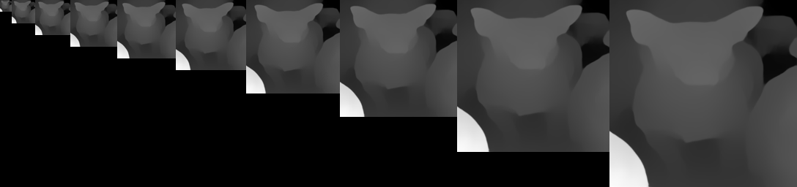
CAR 代码分析
生成部分
- 使用 get_control_for_each_scale 函数获得每个 scale 的控制图和控制 tensor(主要是 control_tensors 后面要用):
- 函数 get_control_for_each_scale 返回不同 scale 的控制图和控制 tensor
- 对源控制图进行 resize 得到不同尺度的控制图
- 把不同尺度的控制图通过 pil_to_numpy 转成 numpy 数据类型，再通过 numpy_to_pt 转成 pytorch 的 tensor, 最后把每个像素值从[0,1]转换成[-1,1]的范围
- 把 control_tensor 通过
repeat(B, 1, 1, 1)扩到 B 倍，B 为 batch_size, 因为这个控制图要用在 B 张图像的生成上。 - 生成一个 sos(start of sequence)
sos = cond_BD = self.class_emb(torch.cat((label_B, torch.full_like(label_B, fill_value=self.num_classes)), dim=0))
- 使用起始标记嵌入 (sos)、起始位置编码 (pos_start) 和层级位置嵌入 (lvl_pos) 生成 next_token_map。
- 新建特征图 f_hat(torch.Size([8, 32, 16, 16]), 全为 0)
- 对上面得到的 control_tensors 中的每一层的控制张量通过一个设计好的多层卷积网络
car_control_convs，逐步减少空间尺寸并增加通道数，最终形成一个个的条件嵌入, 将得到的每一层的条件嵌入存入到 control_f 数组中。 - 使用生成 next_token_map 基本同样的方法生成 next_control_token_map，不同的是这个没加 lvl_pos(层级位置信息)
- 遍历每一个 scale(1, 2, 3, 4, 5, 6, 8, 10, 13, 16):
- 把当前层的控制图条件嵌入通过 repeat(2, 1, 1, 1)重复一倍得到 control_x
- 将 next_control_token_map 调整维度以满足卷积层的输入要求，再进行卷积操作得到 var_x
- 将卷积后的 var_x 与原始的控制信息 control_x 相加，得到最终的控制特征。然后将其形状调整并转置，加上 lvl_pos(层次的位置信息)得到新的 control_x
- 将控制信息 control_x 输入到一系列 car_blocks 中（多个 AdaLNSelfAttn 模块），并通过每一层的计算更新 control_x。这些计算结果被添加到 control_residual_f 列表中，以便后续使用。
- 遍历 var transformer 的自注意力层（后一半添加控制信息，16 层的话 9-16 层添加控制信息）：
- 从 control_residual_f 中取出一个控制信息和 next_token_map 沿着最后一个维度连接起来(
torch.cat([], dim=-1)) - 归一化
car_skip_norm - 线性层
car_skip_linear - 概括：从 control_residual_f 中获取控制残差并与当前的特征图 x 进行连接；经过归一化层处理；然后通过一个线性层进一步处理，并将结果更新到 x 中
- 将 x 传入到自注意力层中，返回结果存储到 x 中
- 从 control_residual_f 中取出一个控制信息和 next_token_map 沿着最后一个维度连接起来(
- 通过计算模型的 logits 来生成最终的预测结果，并使用采样方法从中选取最合适的输出, 取出了最终的样本索引
- 通过索引获取嵌入向量(根据 more_smooth 是否直接使用索引获取嵌入编码)
- 调整特征图形状，然后传入
get_next_autoregressive_input()函数, 如果不是最后一层，则进行 word_embedding、加上位置编码、调整和扩展大小转换成下一层输入next_token_map
- 将最终的特征图转换回图像格式
Control VAR
实验
无法正确生成图像，debugging[X]. 增添了 consume 函数解决了这个问题。
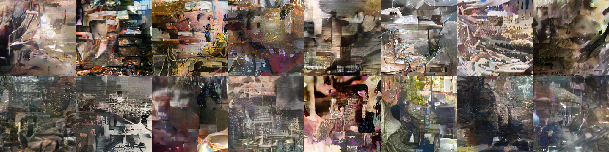
分类：151，种子：32
因为 contorlVAR 将控制图和图像进行联合建模，所以可以通过分类号同时生成图像和控制图，这样做的后果是控制图的效果不好
canny
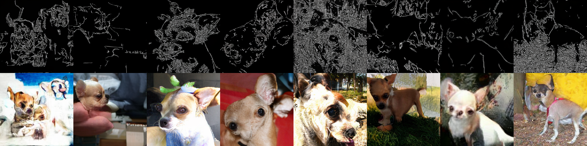
depth
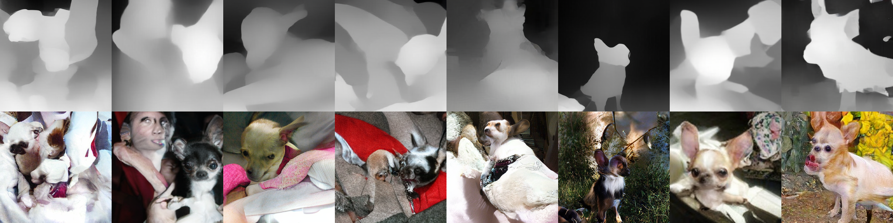
mask
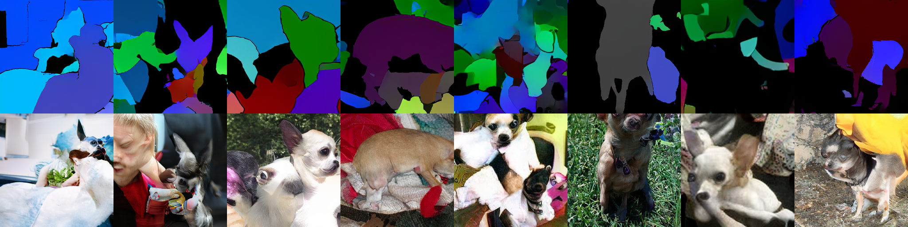
normal
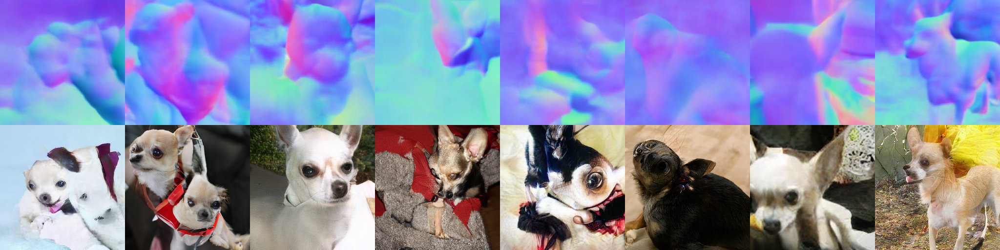
给定深度图生成图像
控制图使用 CAR 提供的提取方法，从数据集分类 151(狗)中的 8 张图像提取的深度图。
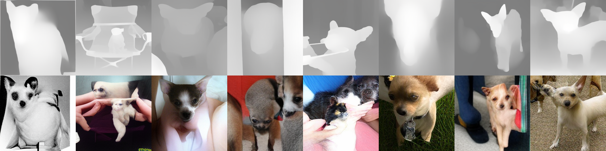
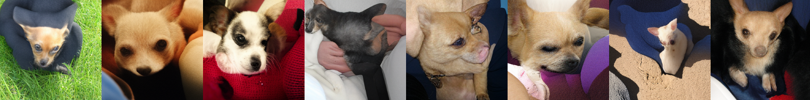
其他分类的生成效果 1
原图和深度图
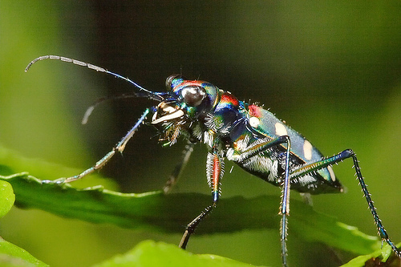
CAR 生成效果
.jpg)
Control VAR 生成效果
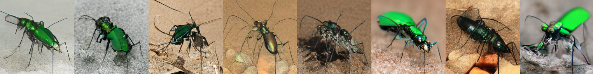
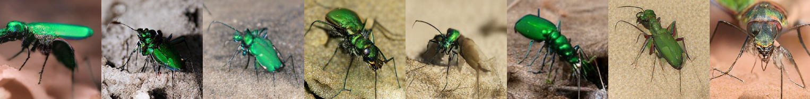
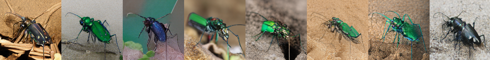
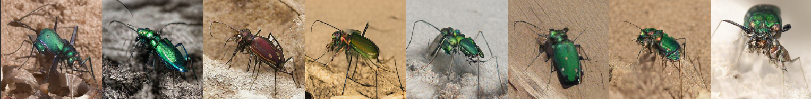
Contorl VAR 论文中类似生成
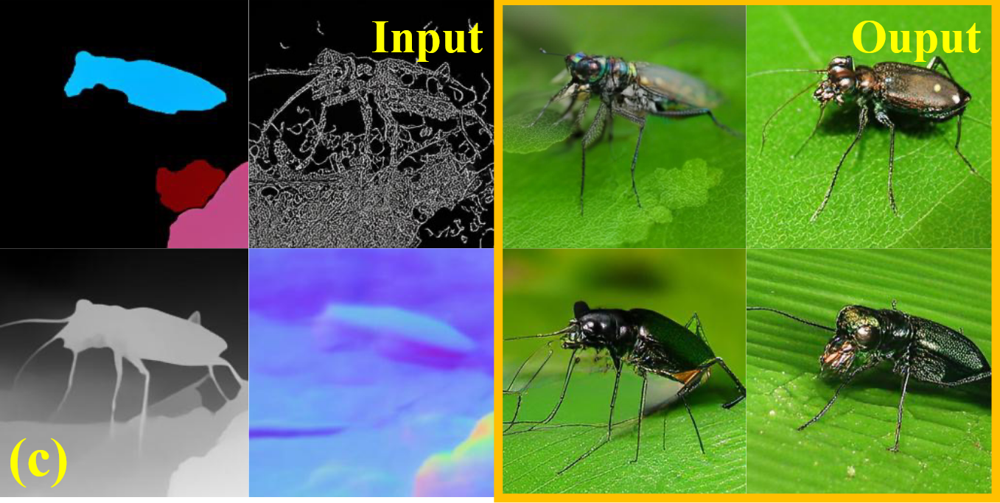
其他分类的生成效果 2
原图和深度图
.JPEG)
CAR 生成效果
.jpg)
Control VAR 生成效果
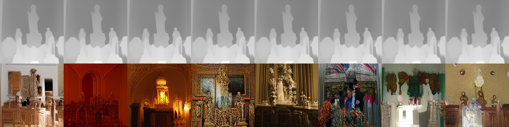
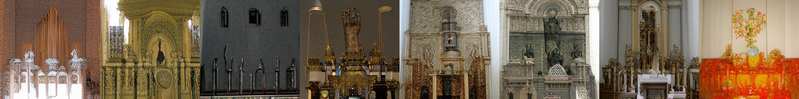
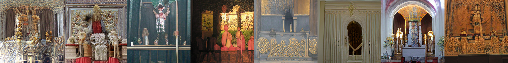
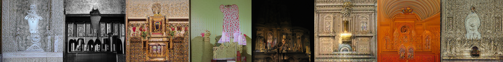
论文阅读
提出两种控制 pixel-level control C 和 token-level control c（c 实际上是分类的指导）。 像素控制是图像大小 3*H*W, token 控制长度为 D
在 AR 下，图像控制生成的条件概率可以表示为
控制图首先被分离从离散的 tokens：C = (y*1, y_2, …,y_T)
为了共同建模图像和控制，同时不失去自回归特性，作者将图像和控制令牌分组为 r_t = (x_t, y_t)，并将联合分布建模为
线图、深度图和法线贴图可以简单地转换成 RGB 格式，但是分割图实体分割掩码 $M\quad{\in}\quad\{0,1\}^{N\times H\times W}$每个位置有 N 个与分类无关地二进制掩码，作者利用基于位置感知地颜色映射，将原来的分割图变成了颜色图。
因为控制图和图像现在都是 rgb 表示，所以作者直接采用了相同的 tokenizer 把图像和控制图进行编码（控制图和图像共享相同的词汇表）
每一个 scale,图像和控制图被拼接在一起，所以它们直接会计算全注意力
利用贝叶斯规则重写后验概率(class c 和 control type c 独立，所以$p(c,c_t)=p(c)p(c_t)$),表示在已知图像 I、控制信号 C、以及特定的控制类型 Ct 的情况下，图像属于类别 c 的概率。通过最大化该后验概率，模型可以生成与类别 c 相关的图像：
假设我们希望生成一张图像
获得所有预测 token 后，就可以通过 decoder 生成图像：
Classifier-Free Guidance & Teacher Forcing Guidance
Classifier-Free Guidance（无分类器引导）：
- 这是一种用于条件生成的技术，目的是在生成任务中通过调整模型生成的分布来增强条件依赖性（让生成结果更符合条件）。
- 与传统的分类器引导方法不同，无分类器引导不需要一个额外的分类器来提供条件约束，而是直接在生成模型内部通过调整条件和无条件分布来实现。
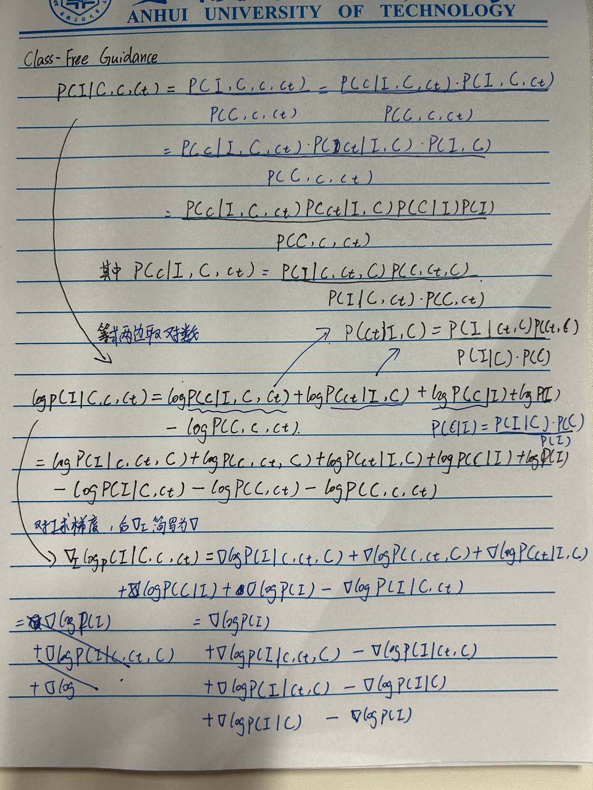
在扩散模型中，
其中 γC、γc、γct 是用于调整幅度以应用条件指导的指导尺度。∅ 表示利用一个特殊的空 token 来替换原始 token，以禁用额外的条件信息。
teacher forcing guidance 将控制和图像进行联合建模，所以推导结果有所不同
12_30
CAR
对于相同种类的狗狗深度图像，car可以生成还不错的效果，但是当使用一种狗狗深度图像作为控制图生成另外一种狗狗图像时（深度图来自151，生成分类号为152的狗狗），car无法生成出想要的图像。
A5000
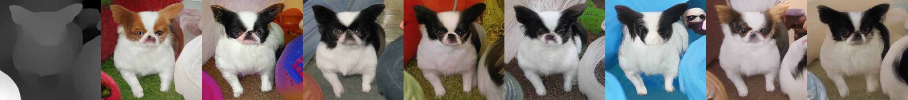
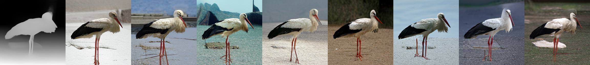
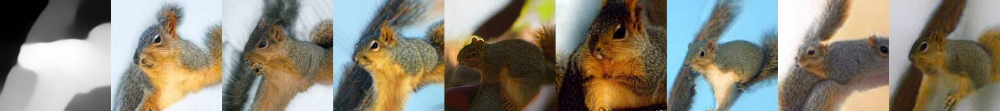
尝试减少控制次数
即减少控制加入的次数,每隔几层加入一次控制
early_control_layers = 4 # Number of initial layers where control is always applied
control_interval = 3 # Apply control every N steps after early layers
control_step = 0
A6000
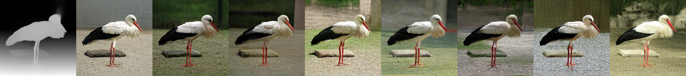
ControlVAR
cls inference img
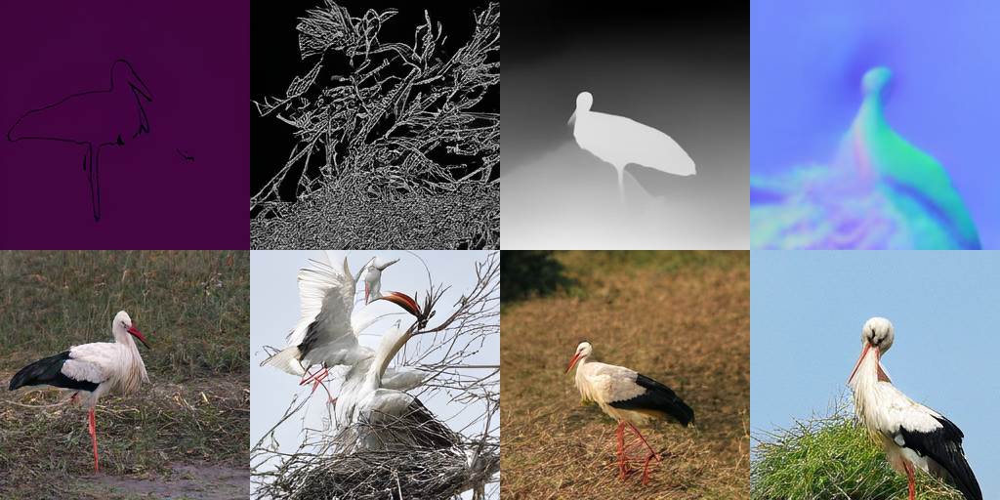

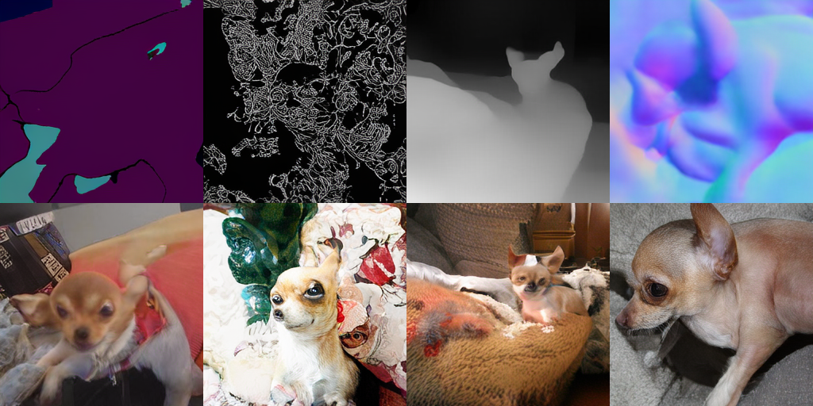
depth inference img
151
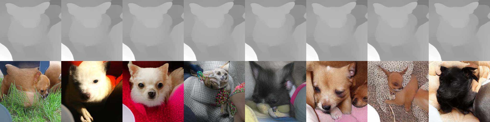
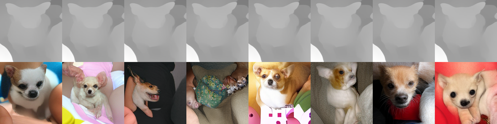
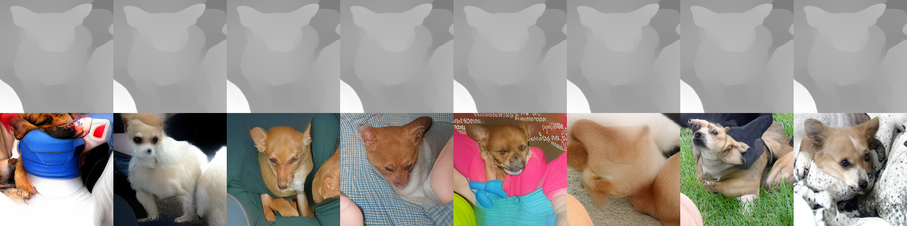
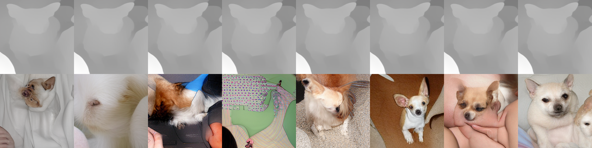
127
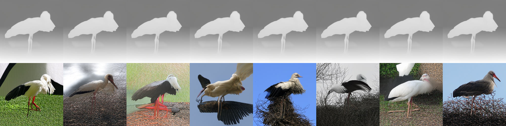
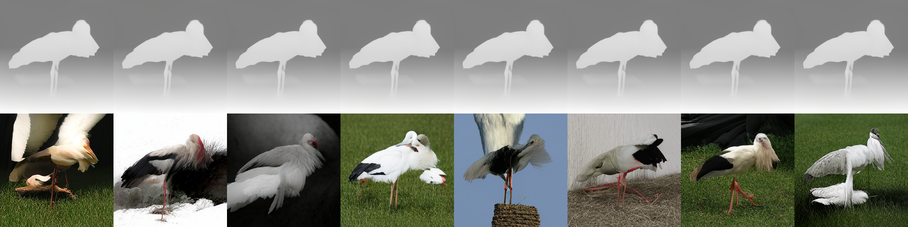
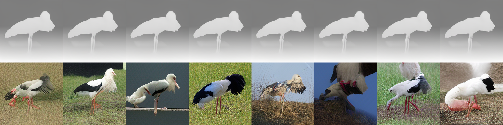
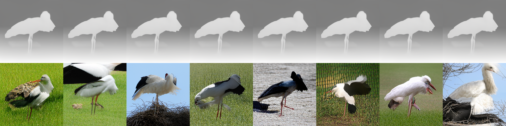
335
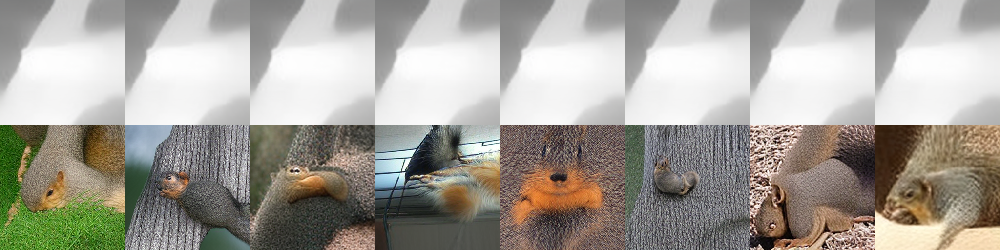
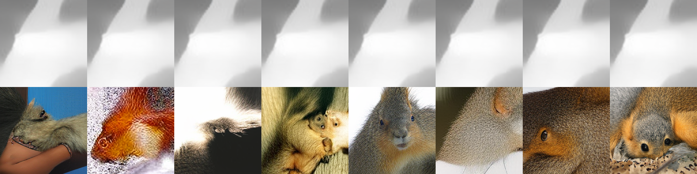
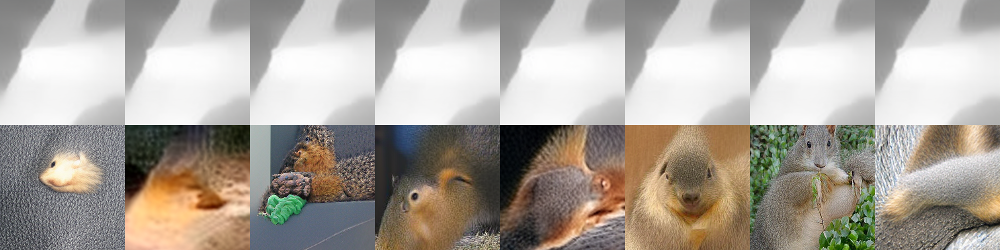
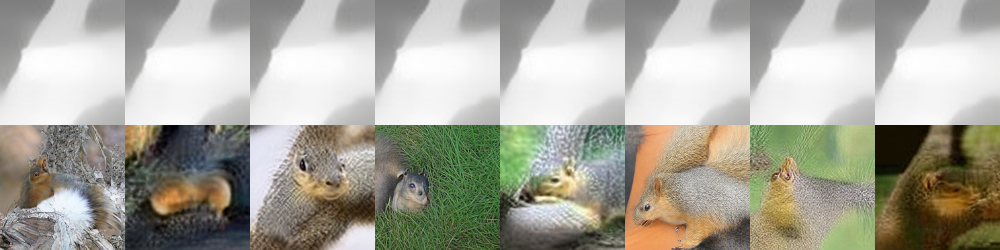